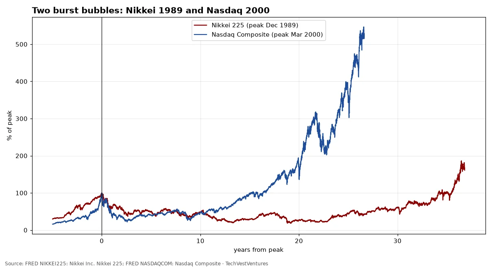
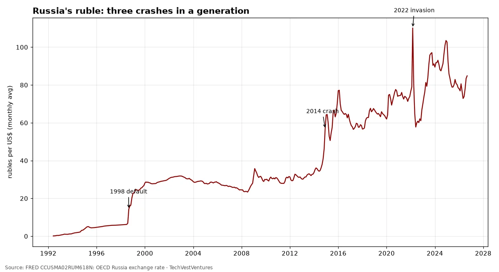
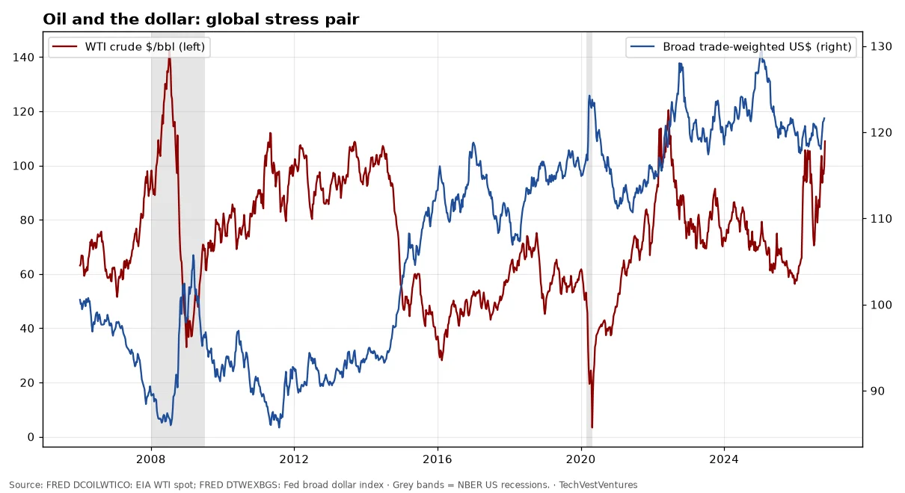
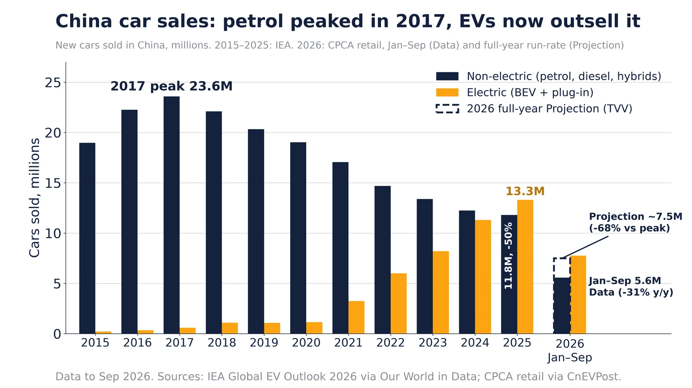
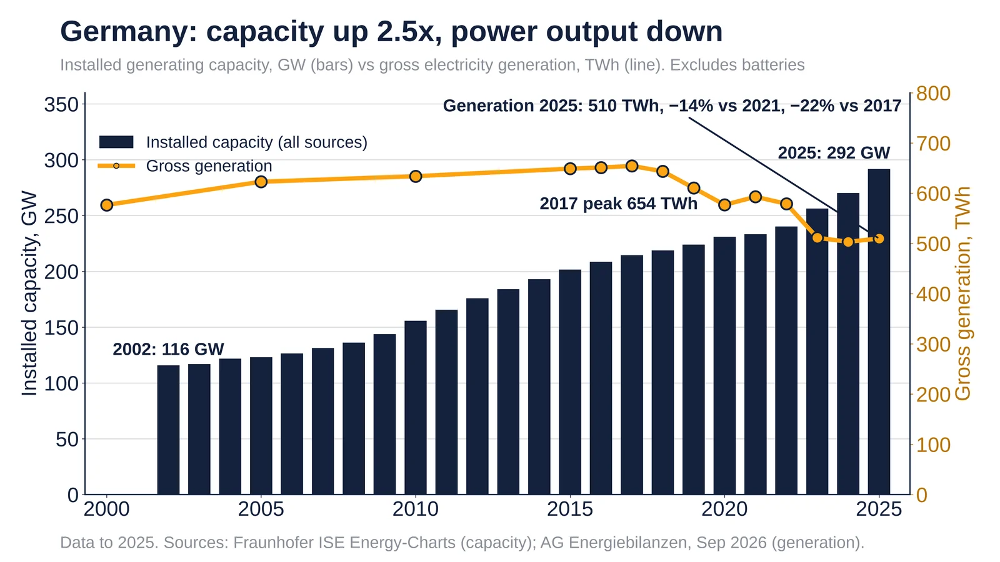
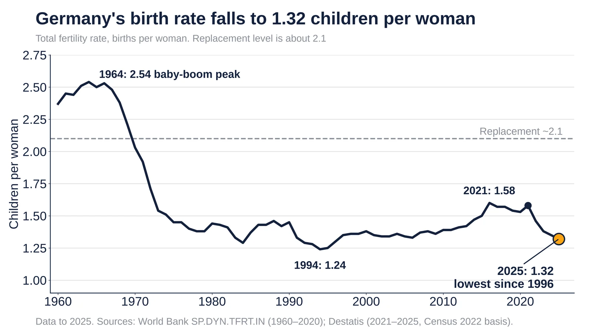
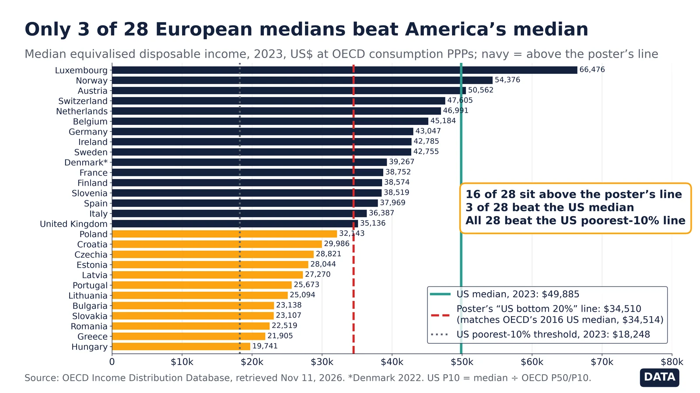
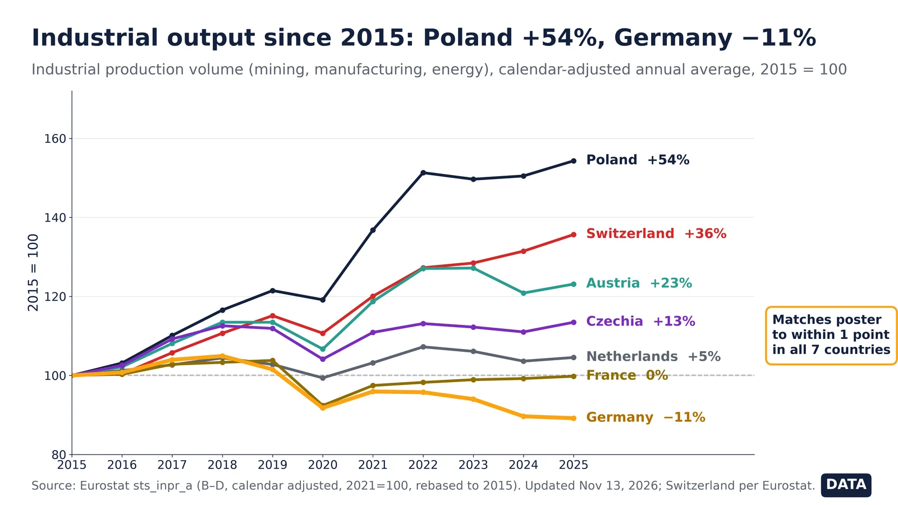
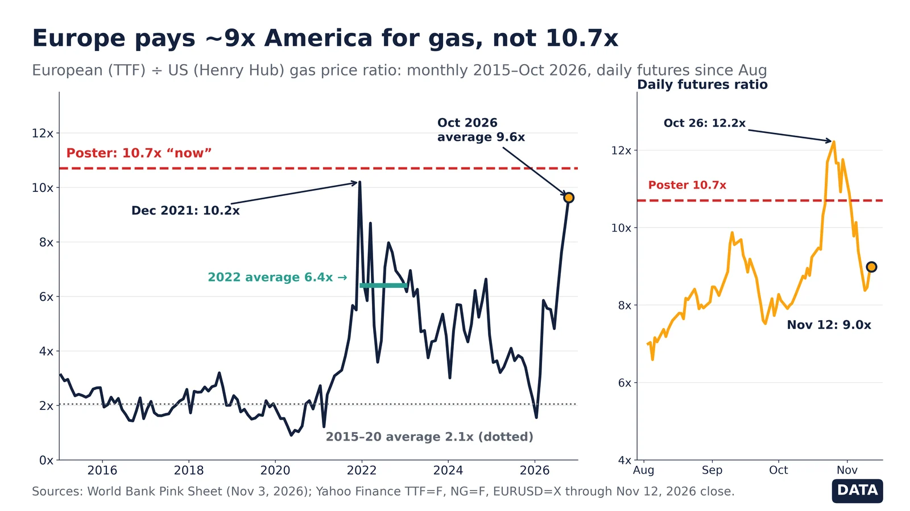

Q6. International

Both indexes indexed to their peaks. The Nikkei 225 fell to about 18% of its 1989 peak and did not regain it until Feb 2024, over 34 years. The Nasdaq lost about 78% and recovered in Apr 2015. Two cases only: they show what a bubble deflation can look like, not that one is due.
Sources: FRED NIKKEI225: Nikkei Inc. Nikkei 225 FRED NASDAQCOM: Nasdaq Composite

IMF World Economic Outlook general government gross debt, % of GDP (latest year in FRED shown in legend). China's ratio has more than doubled since the mid-2010s on the IMF measure, which excludes much local-government financing-vehicle debt.
Sources: FRED GGGDTAJPA188N: IMF WEO Japan FRED GGGDTAITA188N: IMF WEO Italy FRED GGGDTACNA188N: IMF WEO China

BIS total credit to the private non-financial sector (households and companies). China reached 201% of GDP in Oct 2025, up from 107% in 2008. Japan's ratio peaked at 214% in Oct 1993 before its lost decades; the BIS has long flagged rapid credit build-ups as a crisis warning.
Sources: FRED QCNPAM770A: BIS China FRED QJPPAM770A: BIS Japan FRED QUSPAM770A: BIS US FRED QXMPAM770A: BIS euro area BIS credit statistics

Rubles per dollar, monthly average (OECD): 84.8 in Sep 2026, peak monthly average 110.2 in Mar 2022. The 1998, 2014 and 2022 ruble collapses each followed a combination of oil weakness, sanctions or default.

WTI crude $107.89 on Oct 20, 2026; Fed broad dollar index 121.4 on Oct 16, 2026. Oil spikes have preceded several US recessions (1973, 1979, 1990, 2008) — four episodes, not a law.
Sources: FRED DCOILWTICO: EIA WTI spot FRED DTWEXBGS: Fed broad dollar index

Long-term US government bond yield from Shiller's data. Major troughs around 1899, 1941 and 2020; one great peak in 1981 (15.3%). In 150 years that is roughly two to two-and-a-half long (Kondratieff-length) cycles — fewer than the more-than-3 repetitions Michael Hentschel requires before treating a long-wave pattern as evidence.
Sources: Robert Shiller, Yale online data

Monthly 10-year government bond yields (OECD via FRED), latest Sep 2026 (Italy Aug). Japan's 3.05% is the highest since 1996; the UK's 5.24% and the US 4.99% are the highest since mid-2007; France since 2008 and Germany since 2009. The IMF's Oct 13 blog says the G7 average 10-year yield is the highest in nearly two decades and warns of the fiscal stakes. Cycle count: since 1990 the US 10-year has made three major cyclical peaks (late 1994, early 2000, mid-2007); two were followed by a US recession within about 1-2 years (2001, 2008-09) and one by a soft landing (1995). Three cycles with a 2-of-3 hit rate is right at Michael Hentschel's threshold, so read it as a warning, not a prediction.
Sources: FRED IRLTLT01USM156N (and DE, FR, IT, JP, GB, CA) IMF blog, Oct 13, 2026

China new-car sales, millions: petrol peaked 2017; EVs lead since 2025. IEA to 2025, CPCA Jan–Sep 2026.
Data
- 2017 (Data): petrol and diesel car sales peaked at 23.6M (IEA).
- 2025 (Data): petrol and diesel cars fell to 11.8M, half the peak; NEVs outsold them.
- Jan–Sep 2026 (Data): petrol and diesel retail 5.6M, down 31% year on year (CPCA).
- Full-year 2026 (Projection/Speculation): about 7.5M if the Jan–Sep pace holds, roughly −68% vs 2017.
Doubt: China's NEV count includes plug-in hybrids (PHEVs), which still burn petrol, so 'petrol is dying' overstates the shift.
Sources: IEA Global EV Outlook 2026 via Our World in Data CPCA Sep 2026 retail via CnEVPost

Central-bank net gold purchases, tonnes per year, 1950–H1 2026. Sources: IMF IFS, World Gold Council.
Data
- 2022–2024 (Data): over 1,000t a year by WGC estimates (2022: 1,082t; 2024: 1,092t), the most since records began in 1950.
- H1 2026 (Data): 345t bought (WGC).
- 1974 and 1979–81 (Data): US inflation hit 10%+ but central banks did not go on a gold buying spree.
- 1989–2008 (Data): central banks were net sellers in most years.
Doubt on the viral version: Rand Group's 'line went vertical, then double-digit inflation' chart tracks the gold price or reserve value, not tonnes bought. Purchases did not surge in the 1970s.
Rebuttal: Original post: Rand Group, Oct 27, 2026
Sources: IMF IFS official gold holdings via DBnomics World Gold Council Gold Demand Trends FRED CPIAUCNS (US CPI)

Germany 2025: 292 GW installed (2.5x 2002), but generation 510 TWh, −14% vs 2021. Energy-Charts, AGEB.
Data
- 2002 → 2025 (Data): installed capacity rose from 116 GW to 292 GW, mostly solar and wind.
- 2017 (Data): gross generation peaked at 654 TWh.
- 2025 (Data): generation 510 TWh, −14% vs 2021 and −22% vs 2017; renewables 58% of output.
- Apr 2023 (Data): Germany closed its last nuclear plants; nuclear capacity is now zero.
Caveat: solar and wind run far fewer hours than coal or nuclear, so rising capacity with falling output is partly by design. Lower demand and imports also cut generation.
Sources: Fraunhofer ISE Energy-Charts, installed power AG Energiebilanzen, gross generation, Sep 2026

Germany fertility 1.32 in 2025, lowest since 1996; replacement is 2.1. Sources: Destatis, World Bank.
Data
- 1964 (Data): 2.54, the baby-boom peak.
- 1994 (Data): 1.24, the post-reunification low.
- 2021 (Data): 1.58.
- 2025 (Data): 1.32, the fourth straight fall and the lowest since 1996.
Sources: Destatis, total fertility rate (Stand Jul 2026) World Bank SP.DYN.TFRT.IN, Germany
Rand Group claim. IMF data put the dollar at 56.7% of allocated reserves.
Claim checked against Data
- Oct 2026 (Claim): Rand Group said the dollar is down to about 40% of world reserves.
- Sep 30, 2026 (Data): IMF COFER puts the dollar at 56.7% of allocated FX reserves.
Doubt: the 40% figure does not match IMF data, and we could not find the original post or its source.
Rebuttal: IMF data brief, Sep 30, 2026
Sources: IMF data brief, Sep 30, 2026
Interpretation: a trader's chart call, Oct 23, 2026. Not data; no TVV rebuild.
Interpretation
- Oct 23, 2026 (Interpretation): Rand Group wrote that a silver breakdown 'would trigger a further freefall'.
Doubt: this is technical analysis of one price chart, with no supporting supply or demand data. Treat it as opinion.
Rebuttal: Silver Institute: World Silver Survey (supply and demand data)

2025: revenue €1,562.5B, spending €1,714.1B, deficit €151.6B. Debt €3,595.5B Q2 2026. Eurostat, INSEE.
Data
- 2025 (Data): Eurostat general-government revenue €1,562.5B; spending €1,714.1B; deficit €151.6B (5.1% of GDP per INSEE).
- End-2025 (Data): Maastricht debt €3,460.1B (115.7% of GDP).
- Q2 2026 (Data): debt €3,595.5B (119.0% of GDP); net debt €3,366.8B (INSEE IR-239, 29 Sep 2026).
- Arouet graphic claimed €1,590 / €1,755 / €165 / €3,650 — each figure is higher than the official series; TVV uses Eurostat/INSEE only.
Arouet’s framing (‘bankrupt’, ‘never repay’) is opinion. Official deficit is large but not unique in Europe; debt sustainability depends on rates, growth and ECB backstops, which this chart does not model.
Rebuttal: INSEE: France public deficit and debt (IR-239)
Original post: Michael A. Arouet, Nov 2026
Sources: Eurostat gov_10a_main: general government revenue and expenditure INSEE: France public deficit and debt INSEE English: government debt

2025 Projection: UK −16,500 (−24.5 per 100k). Henley/New World Wealth provisional. Not a government series.
Projection
- 2025 Projection (Henley/New World Wealth): UK net −16,500 millionaires; China −7,800; India −3,500; S Korea −2,400.
- Per 100k (TVV calc from Henley flows ÷ mid-year population): UK −24.5; S Korea −4.6; Israel −3.6; France −1.2 — matches Arouet’s chart within rounding.
- Absolute vs per-capita: China loses more people (−7,800) but only −0.6 per 100k because of population size.
- Henley defines HNWI as liquid investable wealth ≥ $1M (excludes most real estate in 2025 methodology).
Henley/New World Wealth figures are provisional commercial estimates, not official migration stats. Tax Policy Associates (Jul 2025) argues the methodology is opaque and inconsistent with HMRC/OBR non-dom evidence; treat as directional only.
Rebuttal: Tax Policy Associates: Henley millionaire-migration methodology critique
Original post: Michael A. Arouet, Nov 2026
Sources: Henley Private Wealth Migration Report 2025 (press) Henley country wealth flows Tax Policy Associates critique (Jul 2025)

2023, US$ PPP: 16 of 28 European medians top poster’s $34,510 line; all beat US poorest 10%. OECD IDD.
Data
- 2023 (Data): OECD median equivalised disposable income in US$ at consumption PPPs: US $49,885. Only Luxembourg ($66,476), Norway ($54,376) and Austria ($50,562) are higher among 28 European countries.
- 2023 (Data): the US poorest-10% threshold is $18,248 (OECD median ÷ P50/P10 ratio of 2.73). All 28 European medians are above it, the lowest being Hungary at $19,741.
- Poster’s line (Data): the $34,510 “US bottom 20%” figure matches the OECD’s 2016 US median ($34,514), not a bottom-quintile value. Against it, 16 of 28 European medians sit higher, not 1.
- 2025 (Data): the poster’s European figures are in PPS (an EU-27 price unit) and don’t match Eurostat’s 2025 medians: Luxembourg 37,673 (poster 40,000), Netherlands 29,714 (25,000), Hungary 11,958 (10,000).
- Method: comparing PPS to US dollars is not like-for-like, so TVV uses the OECD’s single US$ PPP measure for every country. Income year 2023 (Denmark 2022).
- Omitted: the US 20th-percentile threshold. Neither the OECD database nor the Census Table A-3 publishes it for disposable income, so the true “poorest 20%” line isn’t drawn.
The claim that all European countries except Luxembourg trail America’s poorest 20% is overstated. The poster’s threshold appears to be the 2016 US median, it compares PPS with dollars, and its European figures don’t match Eurostat. What does hold is that only 3 of 28 European countries beat the US median.
Rebuttal: OECD: Income and Wealth Distribution Database (IDD)
Original post: Michael A. Arouet, Nov 2026
Sources: OECD: Income and Wealth Distribution Database (IDD) OECD SDMX: disposable income (DSD_WISE_IDD) Eurostat ilc_di03: median equivalised income US Census Table A-3 (P60-286): income and poverty Original post: Michael A. Arouet, Nov 2026

End-2024: pension providers hold 206% of GDP in Denmark, 6% in Germany; poster within 6 points. OECD.
Data
- End-2024 (Data): OECD Table 9.2 puts assets held by pension providers at 206.4% of GDP in Denmark, 166.9% Switzerland, 157.9% Canada, 153.3% US, 150.9% Netherlands, 135.1% Australia, 115.8% Sweden and 78.4% UK. Arouet’s figures match, all within 6 points.
- End-2024 (Data): at the bottom, France 12.9%, Italy 11.7%, Spain 10.8% and Germany 6.4%. Poster’s 13, 12, 11 and 6 hold. The OECD total is 95.2% of GDP.
- End-2024 (Data): the OECD counts public pension reserve funds separately: Sweden 33.3%, Canada 27.4%, US 8.7%, Australia 8.6%, France 7.3%, Italy 5.4%. Adding them would lift Sweden to 149% and Canada to 185% of GDP.
- Definition (Data): OECD “pension providers” include occupational and personal plans, defined-benefit and defined-contribution, and some public-sector plans and book reserves. The poster’s “private” label is therefore loose, notably for Canada and Sweden.
- Context: low funded assets in France, Italy, Spain and Germany mostly reflect large pay-as-you-go state pensions, not an absence of retirement income. The chart compares funded assets, not pension generosity.
- Omitted: asset mix, returns and the poster’s year (not stated); TVV uses the OECD’s latest, end-2024.
The ranking holds, but “private retirement assets” overstates what is counted. The OECD category includes some public-sector and book-reserve plans, and reserve funds sit on top. Low funded assets in France and Germany do not mean thin pensions, because the state pays most benefits from current taxes.
Rebuttal: OECD Pensions at a Glance 2025: assets earmarked for retirement (Table 9.2)
Original post: Michael A. Arouet, Nov 2026
Sources: OECD Pensions at a Glance 2025: assets earmarked for retirement (Table 9.2) OECD Pensions at a Glance 2025 (publication page) Original post: Michael A. Arouet, Nov 2026

2025 vs 2015 industrial output: Poland +54%, Switzerland +36%, Austria +23%, Germany −11%. Eurostat.
Data
- 2025 vs 2015 (Data): Eurostat calendar-adjusted industrial production (mining, manufacturing, energy) is up 54.3% in Poland, 35.7% Switzerland, 23.1% Austria, 13.5% Czechia and 4.6% Netherlands, flat in France (−0.2%) and down 10.8% in Germany. Every poster figure holds to within 1 point.
- 2018 peak (Data): Germany’s index peaked at 108.6 (2021=100) in 2018 and was 92.3 in 2025, so the fall from the peak is 15%. INSEE dates the German decline from 2018.
- Jan–Sep 2026 (Data): vs the 2015 average, Poland +57%, Czechia +15%, Netherlands +9%, Austria +22%, France −1%, Germany −12%. Switzerland is +38% (Jan–Jun only; Eurostat has no Swiss data after Jun 2026).
- EU context (Data): the EU27 index is up 7.2% over the same decade, so Germany’s −11% sits well below the bloc and Poland’s +54% well above it.
- Switzerland (Data): the gain is mostly pharmaceuticals. WIFO notes Swiss and Danish industrial growth is mainly pharma, and excluding it the gap with Austria largely closes.
- Omitted: causes (energy prices, autos, China) and value-added or jobs measures. The chart shows output volume only.
The figures are right, but they measure output volume from one start year. Poland starts from a low base (index 73 in 2015 vs 100 in 2021), and Switzerland’s rise is largely a pharma story, not broad manufacturing. The chart cannot show why Germany fell, and Covid and 2022 energy shocks are in the window.
Rebuttal: WIFO: industrial production in Austria and Switzerland (2025)
Original post: Michael A. Arouet, Nov 2026
Sources: Eurostat sts_inpr_a: annual industrial production Eurostat sts_inpr_m: monthly industrial production WIFO: industrial production in Austria and Switzerland (2025) INSEE: industrial production in the euro area (March 2025 note) Original post: Michael A. Arouet, Nov 2026

Europe-US gas price ratio: 2.1x in 2015–20, 6.4x in 2022, 9.6x Oct 2026, 9.0x Nov 12. World Bank, Yahoo.
Data
- 2015–2020 (Data): the World Bank Pink Sheet’s Europe (TTF) over US (Henry Hub) gas ratio averaged 2.05x. Rand’s “about 2x” holds.
- 2022 (Data): the ratio averaged 6.4x, matching Rand’s 6.4x. The monthly peak was 10.2x in Dec 2021.
- Oct 2026 (Data): Europe $28.50/mmbtu vs US $2.96 gives 9.6x. The World Bank says Europe gas rose 12.1% in October (Pink Sheet, Nov 3, 2026).
- Nov 12, 2026 (Data, TVV calc.): front-month TTF €92.26/MWh at 1.1095 $/€ and 3.412 mmbtu/MWh is $30.00, vs Henry Hub $3.34, so 9.0x. Rand’s 10.7x is overstated by about 1.7x for “now”.
- Oct 26 to Nov 6, 2026 (Data): the daily futures ratio peaked at 12.2x on Oct 26, was 10.9x on Nov 2 and 9.4x on Nov 6. The 10.7x is probably a reading from early November.
- Method: monthly series from World Bank averages; daily from Yahoo front-month futures, a different basis. Nov 13 intraday excluded. Omitted: EIA monthly spot (not needed for the ratio).
The 10.7x is not a current figure on any basis TVV could check: monthly 9.6x, front-month 9.0x on Nov 12. The ratio swings 2–3 points in days, and futures conversion depends on the euro rate. The historical 2x and 6.4x figures hold, so the trend claim is right but “now” is overstated.
Rebuttal: EIA: Henry Hub natural gas spot price (monthly)
Original post: Rand Group, Nov 2026
Sources: World Bank: commodity markets World Bank Pink Sheet: historical monthly commodity data (xlsx) Yahoo Finance TTF=F (Dutch TTF natural gas futures) Yahoo Finance NG=F (Henry Hub natural gas futures) EIA: Henry Hub natural gas spot price (monthly) Original post: Rand Group, Nov 2026